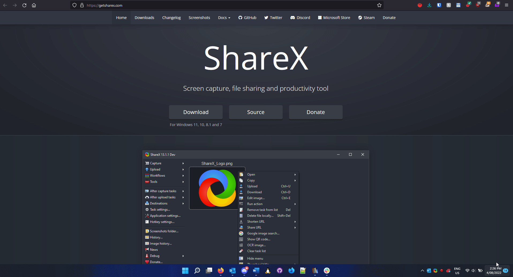
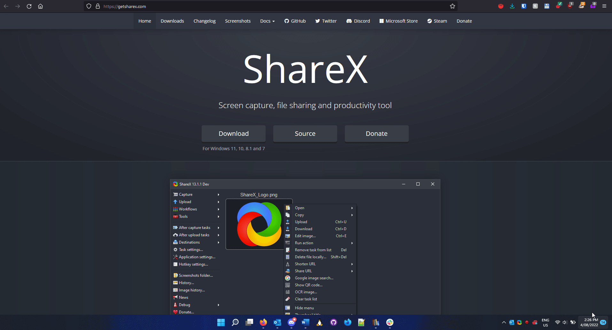

I would like to be able to communicate complex concepts quickly and precisely to others.
- ShareX is an open source screencapture program that I use regularly, I thoroughly reccomend checking it out.

I would like to be able to communicate complex concepts quickly and precisely to others.
